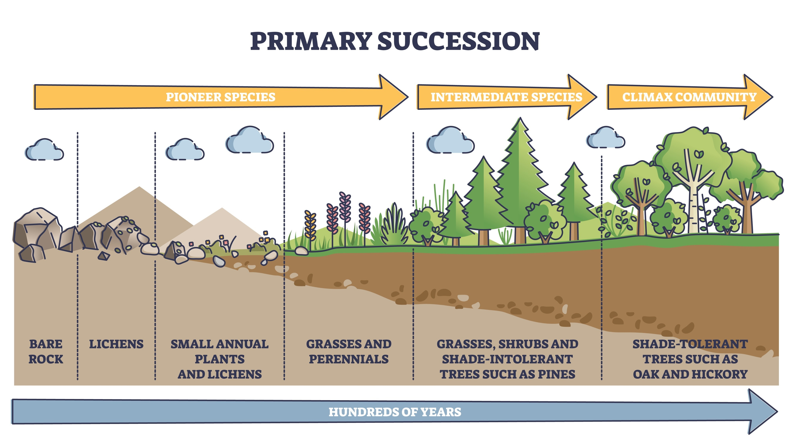
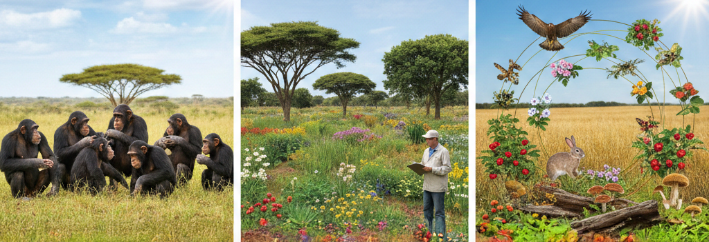
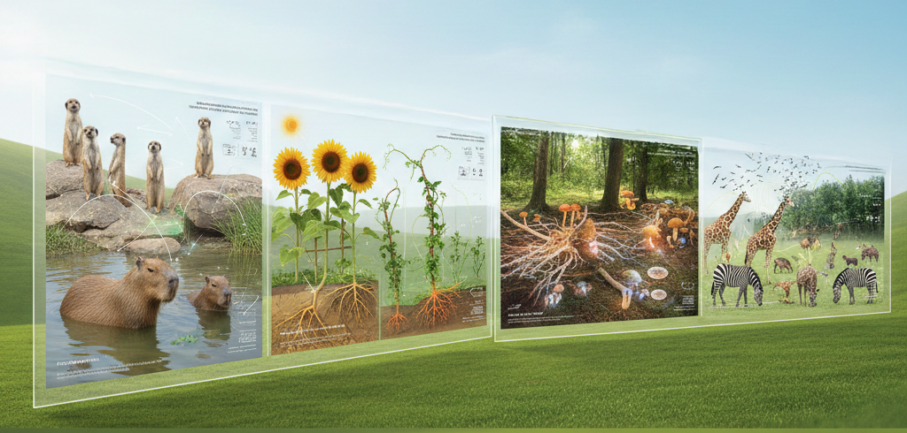
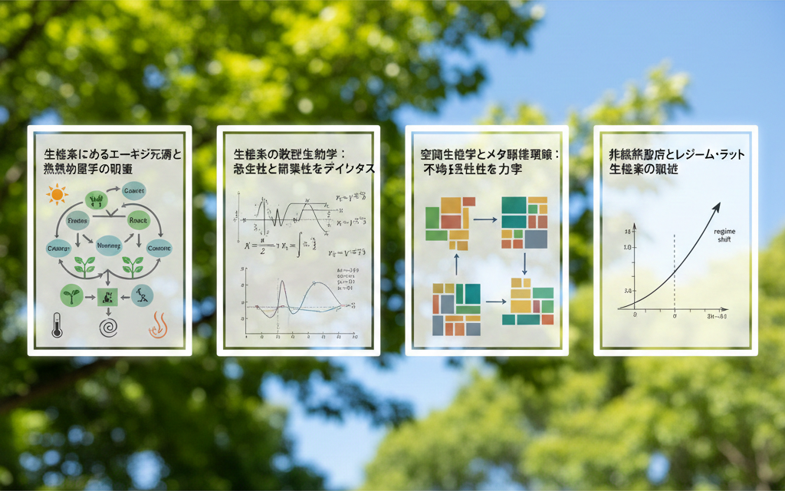

▼目次
動物社会学（Animal Sociology）は、個体間の相互作用、集団の構造、およびその進化メカニズムを解明する領域である。20世紀初頭のW.C.アリーによる集団効果の研究に端を発し、その後動物行動学（エソロジー）と融合することで社会構造の適応的意義を問う行動生態学へと発展を遂げた。
動物が形成する社会は、単なる個体の集合ではない。順位制（Dominance Hierarchy）、縄張り制（Territoriality）、配偶システム(Mating
System)といった構造は、資源の分配や繁殖成功度の最大化を目的とした進化の結果である。たとえば順位制は、集団内での不必要な闘争コストを削減し安定的な資源利用を可能にする。
これらの構造はゲーム理論における「進化的に安定な戦略（ESS: Evolutionarily Stable Strategy）」の概念を用い説明されることが多い。
動物社会学における大きな論点の一つは、自己の適応度を下げて他者の適応度を高める「利他行動」の進化である。W.D.ハミルトンが提唱した血縁淘汰説（Kin
Selection）は、このパラドックスを包括適応度の概念で解決した。ハミルトンの法則は以下の不等式で表される。
rB ＞ C ｒ：血縁度 B：受け手が受ける利益 C：行為者が被るコスト
ハミルトンの法則は、アリやハチなど真社会性昆虫における高度な協力社会の成立を説明する基盤となった。E.O.ウィルソンによる『社会生物学（Sociobiology）』の刊行はこれら個別の知見を統合し、ヒトを含む全動物種の社会行動を生物学的基盤から理解しようとする試みとして、学術界に影響を与えた。
動物社会学が個体間の動的な相互作用に焦点を当てるのに対し、植物社会学（Phytosociology）は、特定の環境条件下で成立する植物種の組み合わせ（種組成）の規則性と空間的配置を研究対象とする。
J.ブラウン・ブランケによって体系化された植物社会学は、植物群落を「確実な種組成を持つ単位」ととらえる。標徴種や区分種など特定種の有無に基づき、植物群落を協会（Association）／群団（Alliance）／群目（Order）／群綱（Class）といった階層構造で分類する手法である。植物群落の体系化により、目に見える植生からその地の気候条件や土壌特性あるいは過去の攪乱の履歴を逆引きすることが可能となった。
植物社会学の視点は静的な分類に留まらず、時間の経過に伴う組成変化すなわち遷移（Succession）のプロセスをも包括する。
一次遷移：土壌形成がなされていない火山噴出物や砂丘など裸地から始まるプロセス。
二次遷移：森林火災や伐採などの攪乱後、既存の土壌や埋土種子（シードバンク）を利用し急速に進行するプロセス。
遷移の最終段階とされる「極相（Climax）」は、地域の気候条件と平衡状態にある安定した組成を示す。植物社会学的な知見は、保全生態学において本来あるべき植生（潜在自然植生）を推定する不可欠な指標となっている。

群集生態学（Interspecific Interaction
Community）の核心は、複数の種が同一空間に共存することによって生じる種間関係群集の解明にある。個々の種は独立して存在せず、食物網や共生関係を通じ複雑なネットワークを形成している。
G.F.ガウゼによる競争排除則は、「同一のニッチ（生態的地位）を占める2種は長期間安定して共存できない」ことを示唆した。しかし実際の自然界では、資源利用の時期・場所・対象を微妙にずらす「棲み分け（Niche
Partitioning）」によって、多くの種が共存している。
種間関係は、利害の対立だけでなく、多様な様相を呈する。
捕食・被食関係：個体群動態を規定する主要因。ロトカ・ヴォルテラ（Lotka-Volterra）方程式により、両者の密度が周期的に変動するモデルが示されている。
競争：制限された資源（光、水、餌、空間）を巡る争い。
共生（Symbiosis）：相利共生、偏利共生、寄生に大別される。近年の研究では、菌根菌と植物の相利共生が、森林生態系の生産性に決定的な役割を果たしていることが明らかになっている。
群集内における相互作用は、直接的な2種間に留まらない。ある種が別の種に与える影響が第3の種を介し波及する「間接効果」は、群集構造の複雑さを生む要因である。
たとえばキーストーン種（Keystone
Species）の存在が挙げられる。R.ペインによる岩礁海岸の実験では、捕食者であるヒトデを除去することで餌であったイガイが独占的に増殖し、結果として多様な種が排除され群集全体の種多様性が著しく低下することが示された。この現象は、上位栄養段階からのトップダウン・コントロール（Top-down
control）が群集の安定性を維持している典型例である。

動物の行動生態学は、個体の行動が生存と繁殖（適応度）にどのように寄与するかを、進化的な文脈で解明する。ニコ・ティンバーゲンの「4つの問い」に端を発するこの分野は、現在ではゲーム理論や最適化モデルを用いた高度な定量的解析へと進化している。
群生態学的な観点において、動物の行動は「集団の秩序」を決定する直接的な要因となる。たとえば血縁淘汰説に基づく利他行動の進化は、ハチやアリに代表される真社会性生物の高度な社会構造を支えている。先述のハミルトンの法則 rB ＞
C （ｒ：血縁度 B：受け手が受ける利益 C：行為者が被るコスト）は、個体の行動選択が単なる自己複製を超え集団全体の遺伝的連続性をいかに維持するかを数理的に示している。
また採餌行動における「最適採餌理論」は、個体の資源利用効率を最大化する行動が、結果として生態系内の獲物（プレデター・プレイ関係）の個体群動態を調整する。
さらに集団内での意思決定プロセス（クオラム・センシングや群行動）は、非線形的な創発現象を引き起こし捕食回避や移動効率の向上をもたらす。
これらの法則性に基づく個体行動の集積が、群集構造の復元力（レジリエンス）を規定する主要因子となっている。
移動能力を持たない植物において行動という概念を用いるのは、かつては比喩的表現に過ぎないと見なされていた。しかし現代の植物の行動生態学は、植物を「環境の変化を能動的に感知し、表現型の可塑性を介し最適な資源配分を行う意思決定主体」と定義している。
植物の行動は、主に成長方向の調整／根の伸展／揮発性有機化合物（VOCs）を用いた情報伝達として現れる。隣接個体との光獲得競争（避陰反応）においてフィトクロムを介した光質（赤色光と遠赤色光の比）の感知は、植物が将来の競争リスクを予測し茎の伸長を優先させる先制的行動を誘発している。
植物間コミュニケーションの存在も学術的に重要視されている。食害を受けた植物が放出するVOCsは、周囲の個体に対して防御物質（タンニンやプロテアーゼ阻害剤など）の合成を促すシグナルとして機能する。個体レベルの防御行動が、群落全体としての耐虫性を向上させるという、群生態学的な防衛ネットワークの形成を意味する。
土壌生態系の基盤を支える菌類においても、菌類の行動生態学という視点は不可欠である。菌糸体は、環境中のリンや窒素などの栄養塩の分布を感知しパルス状の原形質流動や菌糸の分岐・融合を通じ、動的にネットワーク構造を再構築する。
特に植物と菌根菌の共生関係（マイコリザ・ネットワーク）における菌類の行動は、森林生態系のエネルギー分配を支配している。菌類は、光合成産物（炭素源）をより多く提供する植物個体に対し優先的にリンを供給するという「市場経済的な資源交換行動」を行うことが知られている。
菌糸ネットワークによる資源の不均等分配は、森林内の幼樹の生存率を高め、種多様性の維持に寄与する（いわゆるウッド・ワイド・ウェブ仮説）。
菌類の行動は、単なる分解者としての機能を超え、生態系内のバイオマス生産を最適化する「情報インフラ」としての役割を果たしている。
動物・植物・菌類の三者の行動原理が交差する場が、群生態である。群集の安定性は、個体間の「協調」と「競合」のバランスによって保たれる。
密度依存的行動：個体群密度が高まった際、動物の分散行動や植物の自家間引き（Self-thinning）が起こる。資源の枯渇を防ぐための適応的なフィードバック機構である。
種間相互作用の行動的調整：捕食者が存在する場合、被食者は採餌時間を短縮し警戒時間を増やす（リスク・エネルギー・トレードオフ）。この行動変容は、被食者の個体数変化を介さずとも低次の栄養段階にまで影響を及ぼす「行動誘発型トロフィック・カスケード」を引き起こす。
これらの現象は、群集の安定性が単なる現存量の収支だけでなく、個体の「反応速度」や「意思決定の閾値」に依存していることを示唆している。
行動生態プロセスは、最終的に生態系サービスや地球化学循環へと昇華する。たとえば大型哺乳類の移動行動は、広域にわたる栄養素の水平輸送（Nutrient pumping）を担い貧栄養地域へのリンの供給源となる。
また気候変動など地球規模の環境変化に対し生物がどのように適応するかは、その行動的可塑性に依存する。生物季節（フェノロジー）のズレが生じた際行動の柔軟性が高い種は、採餌対象を切り替えることで生存を図るが、特殊化した行動様式を持つ種は絶滅のリスクが高まる。

生態系（Ecosystem）の研究での根源的な視点は、生命集団を「エネルギーの流転」と「物質の循環」が組織化された一つの機能系としてとらえることである。アーサー・タンズリーによって提唱されたこの概念は、有機的・無機的成分を包括する物理学的な熱力学系としての側面を持つ。
生態系内におけるエネルギーの移動は、熱力学第二法則（エントロピー増大の法則）の制約を不可避的に受ける。R.L.リンデマンが定式化した「栄養段階効率」によれば下位の栄養段階から上位へと移行するエネルギー量は、呼吸や未利用物質としての排出により概ね10%程度にまで減衰する。この10%法則は食物連鎖の長さが物理的に制限される理由を説明し、高次消費者のバイオマスが底辺の一次生産者よりも遥かに小さくなるピラミッド構造を規定している。
生物圏は、太陽エネルギーを外部から取り込み、低エントロピーの秩序を維持する「非平衡開放系」である。I.プリゴジンが提唱した散逸構造論を生態系に応用すれば、群集の遷移や極相の状態は、エネルギーの散逸速度が最小化あるいは資源利用効率が最大化される定常状態として解釈できる。生態系は単なる個体の集合ではなく、環境と一体となった巨大な自己組織化システムとしての性質を帯びる。
生態系におけるエネルギーの流入源は、主に植物による光合成（一次生産）である。このエネルギーは食物連鎖を通じて上位栄養段階へ移動するが、各段階での代謝消費と熱としての放出により、高次へ行くほど利用可能なエネルギーは減少する。これを「エネルギーピラミッド」と呼び、通常、上位栄養段階の生物量は下位のそれよりも遥かに小さくなる（10％法則）。
炭素・窒素・リンといった元素は、生物圏・岩石圏・水圏・大気圏を循環する。生物はこれらの循環の「ゲートキーパー」として機能している。
窒素固定：根粒菌などの微生物が、大気中の不活性な窒素を生物利用可能な形に変換する。
分解過程：土壌動物や微生物が有機物を無機化し、再び一次生産者へと還元する。
生態系の理解には均一な空間を仮定したモデルから脱却し、パッチ状に分断された環境における「空間的ダイナミクス」を考慮しなければならない。
個体群が空間的に孤立したパッチに分散して存在する状態を「メタ個体群」と呼ぶ。R.レヴィンズのモデルによれば、各パッチでの絶滅（Extinction）と、他パッチからの入植（Colonization）のバランスが、広域的な存続を決定する。繁殖率が高く個体を供給する「ソース（供給源）」パッチと、死亡率が上回るが流入によって維持される「シンク（吸収源）」パッチの空間配置が、生態系全体のレジリエンスを規定する。
マッカーサーとウィルソンの「島嶼生物学の理論」は、パッチの面積と孤立度が種多様性を決定することを示した。
島嶼生物学の理論は、現代では複数種が相互作用しながら空間を移動する「メタ群集（Metacommunity）」理論へと深化している。メタ群集理論は種間競争という局所的なプロセスと分散という広域的なプロセスが、いかにして地球規模の生物多様性パターン（種多様性勾配）を形成するかを解明する枠組みを提供している。
生態系の数理生物学は、群集内の多種間相互作用を微分方程式や確率モデルを用いて記述し、系の安定条件を理論的に導出する領域である。
1970年代、ロバート・メイはランダムに構築されたネットワークモデルを用い「種の数（複雑性）が増すほど、系は不安定になる」という当時の「多様性が安定性を生む」という生態学的直感に反する結論を数学的に証明した。「メイのパラドックス」と呼ばれ、現実の生態系がなぜ高度な複雑性を維持しながら崩壊を免れているのかという、現代数理生態学における最大の命題の一つを提示した。
近年の生態系の数理生物学研究によれば、自然界のネットワークは「弱い相互作用（Weak interactions）」の連鎖によって安定化していることが判明している。強固な捕食関係は振動を増幅させ破綻を招くが、多数の微弱な相互作用がノイズを吸収し、系の発散を抑制する。また群集がいくつかの「モジュール（部分集団）」に分かれ、特定の摂動（攪乱）が系全体に波及するのを防ぐ構造も、複雑性と安定性の両立に決定的な役割を果たしている。
生態系は、外部攪乱に対して常に線形的な反応を示すわけではない。ある臨界点を超えた際に系の構造が劇的に変化する「レジーム・シフト（Regime Shift）」は、生態保全における課題である。
富栄養化が進む湖沼やサンゴ礁の白化現象に見られるように生態系には、複数の「代替的安定状態（Alternative Stable
States）」が存在し得る。透明な湖からアオコの発生する濁った湖と化するような一度ある状態から別の状態へ転移すると、原因となった負荷を元のレベルに戻しても系は簡単には旧状に復さない「ヒステリシス（履歴現象）」を示す。
生態系の数理生物学ではこれら破局的な変化を事前に予測するための「早期警戒信号（Early Warning
Signals）」の研究が進んでいる。臨界点に近づくと、攪乱からの回復速度が極端に低下する「臨界スローイングダウン（Critical Slowing
Down）」現象が観察される。統計的徴候を検知することで、生態系の崩壊を未然に防ぐマネジメントが可能になるのではと期待されている。
衛星リモートセンシング／バイオロギング／環境DNA技術などによって得られるメガデータは、これまでの局所的な観察ではとらえきれなかった地球規模の物質循環や種間ネットワークを可視化できる。特にグラフ理論を用いた食物網解析は、生態系内の特定の種（ハブ種）が消失した際の影響範囲をシミュレーションし、生態系崩壊のドミノ倒しを予測するツールとなっている。
人間活動が生態系に与える影響が地質規模に達した人新世において、生態系は単なる「自然」ではなく、人類の生存基盤である「社会・生態システム」の一部として再定義されている。水質浄化・炭素固定・受粉といった生態系「サービス」の経済的・生態学的価値を数理的に評価する試みは、未だ不完全ながら持続可能な開発目標（SDGs）を達成する科学論拠として政治的経済的に利用されている。
